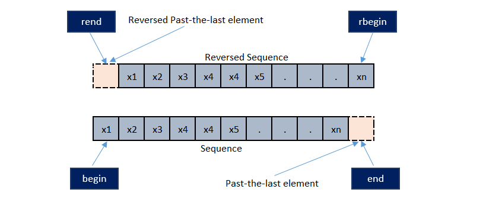
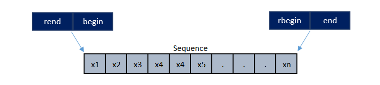

Обзор STL.
Стандартные sequence containers:
arrayvectordequeforward_list(односвязный)list(двусвязный)
Ассоциативные контейнеры:
mapsetunordered_mapunordered_set
Обычно к типам, которые можно хранить в контейнерах, есть какие-то требования. Например, контейнер может допускать только копируемые или присваиваемые типы.
Например, если сделать std::vector<void> v;, то получим ошибку компиляции.
Ещё пример:
struct mytype{};
bool operator<(mytype, mytype) {
return true;
}
std::set<mytype> v;
Set не сможет работать с таким типом, так как a < b и b < a верно одновременно.
При этом если поменять в примере true на false, такое сравнение будет корректным (согласно ему, все элементы равны).
Требования к сравнению написаны в стандарте.
Ещё пример:
struct mypair {
int x;
int y;
};
bool operator<(mypair a, mypair b) {
return a.x < b.x && a.y < b.y;
}
Правильное сравнение требует, чтобы классы эквивалентности можно было задать как !cmp(a, b) && !cmp(b, a), поэтому такое сравнение критерию не удовлетворяет.
Аналогично std::set<double> v тоже грустно, так как NaN оказывается равен любому элементу, так как любое сравнение < с ним дает false.
Можно передавать компаратор:
struct comparer {
bool operator()(int* a, int* b) const {
return *a < *b;
}
};
int main() {
std::set<int*, comparer> s;
int xval = 4;
int yval = 5;
s.insert(&xval);
s.insert(&yval);
}
Небольшое отступление: почему лучше struct компаратор, а не функция? Посмотрим на такой пример:
void f(void (*g)()) {
g();
}
Компилятор не сможет заинлайнить такое, так как не понятно, на что это g в общем случае ссылается. А если сделать так:
template <typename G>
void f(G g) {
g();
}
struct my_g {
void operator()() const;
};
void hello() {
my_g g;
f(g);
}
f - шаблонная, поэтому инстанцируется для каждого G и компилятору понятно, какая функция вызывается и её можно инлайнить.
Возвращаясь к std::set<int*, comparer> s заметим, что мы можем поменять данные, указатель на которые положили,
тогда такой компаратор начнет сравнивать одинаковые элементы по-другому, поэтому это тоже плохой пример.
Возвращаясь к идее STL: основной бонус от обобщённых контейнеров - возможность использовать одинаковые алгоритмы с разными контейнерами. Чтобы обобщить обращение к элементу (в векторе по индексу, в листе - по нодам) используют итераторы.
Итераторы - тип, позволяющий ссылаться на элементы в контейнере. Для векторов можно думать, что он хранит указатель на элемент, для списков, например, указатели на ноды.
Обычно итератор это шаблонный класс с параметрами Category, T, Distance, Pointer, Reference, в котором есть следующие мемберы:
using iterator_category = Category;
using value_type = T;
using difference_type = Distance;
using pointer = Pointer;
using reference = Reference;
Каждый контейнер предоставляет операции begin(), end(), где begin() ссылается на первый элемент, а end() на следующий за последним.
Все итераторы делятся на 5 категорий:
- input iterator
- output iterator
- forward iterator
- biderectional iterator
- random access iterator
Рассмотрим каждую из этих категорий.
Forward итератор поддерживает такие операции:
==!=*itit->x++itit++*it =
Такие итераторы используются, к примеру, в std::forward_list и алгоритме partition.
Input и output итераторы, в отличие от forward итераторов, позволяют пройти по диапазону только один раз. При инкременте input и output итераторов все их копии инвалидируются.
При инвалидации число операций, которые можно делать с итератором, ограничивается до минимума: его можно разрушить или присвоить ему другой итератор. К примеру, в std::vector'е после удаления некого элемента происходит инвалидация итераторов, указывающих на него или на любой элемент после него, а после добавления элемента, в случае, когда size == capacity, инвалидируются все итераторы.
Input итераторы позволяют читать данные, а output итераторы — записывать.
Input итераторы поддерживают такие операции:
==!=*it- получаем rvalueit->x- получаем rvalue++it*it++
А output итераторы — такие:
*it =++it*it++ =
Примеры таких итераторов — std::istream_iterator и std::ostream_iterator (input и output итераторы соответственно).
Bidirectional итераторы поддерживают те же операции, что и forward итераторы, но с помощью них также можно ходить по диапазону в обратном направлении, то есть они поддерживают декремент:
--itit--*it--
Такие итераторы, например, требует std::reverse.
Random access — самая мощная категория итераторов. Ко всем предыдущим поддерживающимся в итераторах операциям добавляются:
it += nit -= nit + nn + itit - nit1 - it2it[n]<, >, <=, >=
Random access итераторы свойственны таким контейнерам, как std::vector, std::array. Указатели также являются random access итераторами (на самом деле даже contigious, описанными ниже). Random access итераторы требуются для функций, где необходимо уметь прыгать через n элементов: сортировки, k-я порядковая статистика, бинарный поиск и т.д.
В C++20 появились contiguous итераторы. Они поддерживают все операции, поддерживаемые random access итераторами, и при этом гарантируют, что элементы хранятся в памяти последовательно.
Все контейнеры, поддерживающие итераторы, позволяют обходить их от begin() до end(), но не во все можно вставить элемент в произвольное место.
Это возможно, например, в векторе или листе, но в упорядоченных контейнерах должны сохраняться инварианты.
Про эффективность алгоритмов: В STL вычислительная сложность - часть интерфейса. Казалось бы, для листа можно реализовать random access операции, но они будут работать неэффективно. Передав такие операторы в алгоритм вроде сортировки, мы получим плохое время работы. Поэтому обычно, если не можем предоставить эффективную операцию, то она просто не предоставляется.
Для разности итераторов, например, есть алгоритм std::distance, который гарантирует не константное, а линейное время работы, но работает для любого итератора.
В STL есть два разных алгоритма upper_bound. Один из algorithm, сформулированный для итераторов, а другой - метод у set, который оперирует с нодами дерева.
Интересное замечание: долгое время шли споры, должны ли size от листа работать за линейное или константное время.
Размер за константу тяжело поддерживать, если хотим splice делать константным (позволяет разрезать лист и переместить подпоследовательность).
В итоге пришли к тому, что splice работает за линейное время, а size за константу.
Про то, как можно смотреть на итераторы:
Алгоритмы из STL чаще всего принимают пару итераторов (обычно начало и конец). Такие операции работают на [first, last).
То есть если передать begin() и end(), то алгоритм будет работать со всем контейнером целиком.
Один из способов смотреть на итераторы - это думать, что они ссылаются на элементы. Другой - считать, что они ссылаются "между" элементами. Если смотреть на одни функции, то может казаться естественным первый способ, а для каких-то второй. Например, для ревёрс-итераторов логичнее второе представление.
Ревёрс-итераторы позволяют пройти контейнер в обратную сторону. Итератору rbegin() соответствует end(), а rend() это begin().
.base() по итератору выдает соответствующий ему ревёрс-итератор. Важно понимать, что .base() ссылается не на тот же элемент, а на соседний.
rbegin().base == end().

Теперь давайте посмотрим на ревёрс-итераторы, считая, что они ссылаются "между" элементами:

В таком случае наглядно видно соотвествие rbegin() и end(), rend() и begin().
Про бинарный поиск (далее итераторы ссылаются между элементами):
lower_bound и upper_bound, если элемент не существуют, возвращают, куда этот элемент можно вставить, не нарушив последовательности.
Если же элемент находится, то lower_bound возвращает первую позицию, куда можно вставить, не нарушив порядок, а upper_bound - последнюю.
Удаление элементов по предикату работает за линейное время, используя два указателя итератора, не выделяя новой памяти, меняя элементы местами.
Идиоматический способ удалять элементы по предикату:
std::vector<int> v;
auto it = std::remove_if(v.begin(), v.end(), pred); // переупорядочивает и возвращает итератор на позицию, "где заканчиваются хорошие элементы"
v.erase(it, v.end()); // чистим хвост, так как физический размер вектора остался тем же (подробнее на cppreference)
В C++20 появился operator<=> (three-way comparison) сразу говорит, "меньше, равно или больше" и в возвращаемом значении говорит, какой order даёт (partial, weak, strong).
Так же в C++20 появились range, и какие-то алгоритмы в STL могут поменяться.
// std::distance
template <typename InputIterator>
ptrdiff_t distance(InputIterator first, InputIterator last) {
size_t n = 0;
while (first != last) {
++first;
++n;
}
return n;
}
template <typename RandomAccessIterator>
ptrdiff_t distance(RandomAccessIterator first, RandomAccessIterator last) {
return last - first;
}
Как проверить в первой реализации, что last > first и что они вообще из ондого контейнера? ~А никак~
Обычно можно включить макрос, который включает проверки в контейнерах (например, ключ компиляции -D_GLIBCXX_DEBUG, здесь -D означает задефайнить макрос).